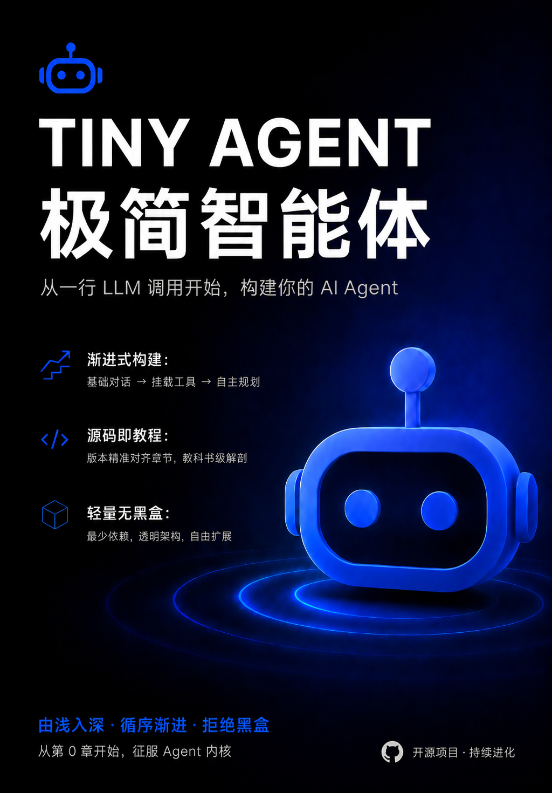

前言：一次全新的 AI 智能体教程尝试
事情是这样的。我身边有几个 35 岁上下的朋友，这两年都盘算着往 AI 方向转，但聊起来几乎全是焦虑。一方面是 AI 发展实在太快了，今天一个新概念，明天一个新产品，刚觉得自己搞懂了点东西，转眼又冒出一堆听不懂的名词。另一方面，他们也不是没去学过，市面上讲智能体的课程翻了不少，可要么一上来就甩一个臃肿的框架、要么聚焦商业产品的特性、要么花大量篇幅讲理论，来龙去脉压根没交代清楚。有朋友甚至抱怨：“你讲半天，还不如直接给我一段能跑起来的代码，我自己改两把就明白了。”
这话我越琢磨越觉得有道理，大家需要一个理论讲解与源码实战融为一体的智能体教程。不过真准备动手之前，我也没少在版本路线图上犯纠结。一开始贪多，洋洋洒洒列了二十多个版本，什么功能都想往里塞。回头一看，这种搞法我太熟了——我这个人之前搞事情经常半途而废，堆得越多，烂尾得越快。所以后来我逼着自己做减法，狠心砍到七个版本。心说别求大求全，先把最核心的骨架跑通，看看能坚持到哪。于是就有了Tiny Agent这个开源项目。
它不是什么功能拉满的开发框架，而是一份手把手的教学代码——我把Agent最核心的能力拆成了一个个独立可运行的代码版本，教程每一章与版本对应。每一章都可以实操，你直接切换 Git Tag 就能跳到某个版本，看最精简的实现，跑起来随便改。整条路线像搭积木，从最简单的模型调用开始，一层一层往上叠，最后长出一个能自己思考、查资料、调工具的小智能体。
交代一下技术选型。后端用的是 Python 搭配 FastAPI，没什么特别的原因，就是图它轻，几行代码就能起一个服务，而且整个项目不依赖任何重型 Agent 框架，所有逻辑从零手写，你看到的就是全部。前端更干脆——原生 HTML + CSS + JavaScript，故意不用 Vue、React 这些东西，怕的就是前端门槛把想学原理的朋友挡在外面。你只要能看懂页面是怎么拼起来的，就能搞明白数据是怎么在浏览器和服务器之间跑的。
希望读完这个教程后，你不仅能够使用 Agent，更能够理解和设计 Agent，并亲手构建出属于自己的、能解决真实问题的 Agent。
作者：Leon (leonlu.cc@foxmail.com)
本书采用 CC BY-NC-ND 4.0 许可协议，商业转载请联系作者进行授权，非商业转载请注明出处。
导读：从零构建一个 AI 智能体
你是否曾被“Agent框架”的黑盒搞得晕头转向？是否在看了一堆理论后，依然不知道一个ReAct循环到底如何落地？我们相信，征服复杂概念的最好方法，不是仰望它，而是亲手拆解、重构它。欢迎来到Tiny Agent的世界，这里没有魔法，只有源码。
本教程的核心理念只有一句话：最好的学习方式是亲手构建。整个演进过程被精心拆解为迭代的版本（Git Tag），每个版本都聚焦于一个核心能力的从无到有，可以随时切换到任意阶段独立运行和研读源码。
为了让这套“渐进式”开发和学习真正高效，每个章节都被设计为统一的七段式结构。它既不是干瘪的源码注释，也不是纯理论的白皮书，而是一条从问题到方案的完整思考路径。
每个章节的结构
当你打开任何一个版本对应的章节时，都会看到以下七个部分，它们承担着不同的角色：
-
概念引入
每章不会一上来就丢出代码或术语，而是从一个真实场景中的棘手问题出发：为什么单轮问答不够用？为什么大模型需要借助搜索引擎？为什么 Agent 会陷入死循环？通过还原这些痛点，你会清楚地知道这一章要解决什么，以及我们为什么非得引入一套新机制不可。 -
整体方案
在动手之前，先用一张架构图把整章的设计思路“鸟瞰”一遍。这里会梳理系统由哪些模块组成，数据如何流转，新增的组件如何与已有部分协作。读完这一节，你应该能够明白“请求从哪进来，经过哪些步骤，最后从哪出去”。 -
核心概念
这是最重要的原理层。我们会把整章的关键知识点拆解成若干个小概念逐一讲解，比如“什么是 SSE 协议”、“Message Protocol 中的角色分工”、“ReAct 循环的 Thought → Action → Observation 三态是怎样推导的”。这一节的目标是让你不仅会做，而且真正懂原理。 -
工程实现
开始接触项目代码，但绝不是把几百行源码直接贴出来让你硬读。我们会围绕整章新增或修改的关键文件，说明每个模块的职责、核心类的关系以及最重要的运行时流程。你将被引导去关注“数据在哪里被转换”“控制权在哪里被交接”这类结构性问题，而非在细节里迷失。 -
Git Diff 导读
因为整个项目被切分到了不同的 Git Tag 中，所以这一节会像一份精炼的代码对比报告：相比上一版本，我们新增了哪些文件、修改了哪些模块、重构了哪些部分，每一项变化分别是为了解决上一版本的什么具体问题。你甚至可以把这一节当作检查清单，用来核对自己的理解是否到位。 -
架构思考
到此我们并不满足于“跑通了”。这一节会追问三个问题：- 为什么这样设计？（方案的合理性）
- 有没有其他实现方式？（替代方案及其利弊权衡）
- 当前的局限是什么？（工程落地的优化方向）
-
本章小结
简短回顾每章交付的能力，然后自然而然地引出下一个版本将要面对的挑战。你会发现，每个版本的终点，恰好就是下一版本的起点。
整个演进路线一览
全书共分五个部分，恰好对应了 Tiny Agent 渐进式演进路线的关键版本。每一部分都承担着明确的使命：
-
第一部分：模型基础与全栈通信（基础篇）
从终端里的第一次 LLM 调用开始，搭建流式 Web 前后端通信，实现多轮连续对话，并通过 Prompt Template、System Prompt 与结构化输出让模型“按规矩办事”。这一部分将为你打下不可或缺的全栈基础。
里程碑：构建一个 AI 聊天助手。 -
第二部分：外部知识与规划行动（连接篇）
引入 RAG 打通文档切片、向量检索与引用回复的完整链路，用 Function Calling 为 Agent 装上调用外部工具的双手，最后手写 ReAct 核心循环，让 Agent 从被动调用工具走向自主思考、感知与行动。完成这一部分后，你的 Agent 将不再困于训练数据之内。
里程碑：构建一个能够检索知识并自主调用工具的智能体。 -
第三部分：能力拓展与流程编排（拓展篇）
通过 MCP 协议统一工具接入标准，以 Skills 实现能力的模块化封装与动态加载，再用 Workflow 将单次调用编排为可复用的多步骤任务流。由此，Agent 的能力边界变得开放、可组合且可持续扩展。
里程碑：构建一个支持标准工具协议、技能可插拔的智能体工作流平台。 -
第四部分：工程强化与生产就绪（强化篇）
为 Agent 加入上下文管理与 Token 熔断，构建长期记忆漏斗实现跨会话知识留存；引入混合检索、重排序与向量数据库提升检索精度；通过评估指标与全链路追踪让效果可验证；并建立工具权限分级与确认机制，构筑安全边界，使 Agent 走向可靠、可观测、可审计。
里程碑：构建一个记忆持久、检索精准、行为可审计的高可靠 Agent 系统。 -
第五部分：多模交互与群智协同（前沿篇）
突破纯文本界面，赋予 Agent 语音与视觉能力，最终探索多智能体协作模式，让多个不同角色的 Agent 共同完成复杂任务。这是迈向生产级智能体的最后一站。
里程碑：构建一个能听会说、看懂世界并协同工作的多模态多智能体系统。
无论是想深入理解 Agent 底层原理的工程师，还是正做技术选型的架构师，这份教程都会是一张清晰、可动手验证的地图。
技术栈与前置技能
在开始之前，让我们先对齐一下“装备库”。为了保持轻量与纯粹，我们尽量避免了笨重的框架，选择了一套最符合现代 AI 开发直觉的轻量级技术栈。
我们的技术栈
- 核心语言：Python 3.12+（主打简洁与生态，零门槛上手）
- Web 框架：FastAPI（用于构建高性能的 Agent 后端 API）
- 前端交互：原生 HTML + CSS + JavaScript （用于构建极简 Web 页面）
- 版本控制：Git（我们唯一的“时光机”，用于切换版本代码）
你需要具备的基础
- Python 基本功：熟悉基础语法、异步编程及基本的数据结构。
- Git 基础操作：知道如何 git clone 和 git checkout（我们会带你完成其余操作）。
- 无需大模型开发经验：你不必提前了解其他 Agent概念，我们将从最底层的 API 调用开始，带你手写属于自己的控制流。
现在，让我们从第一部分开始——你只需要一个 LLM 的 API Key 和一个终端。
目录
前言
基础篇——模型基础与全栈通信
- 第一章：你好，大模型
- 第二章：Web 流式输出
- 第三章：多轮对话
- 第四章：结构化输出
链接篇——外部知识与规划行动
拓展篇——能力拓展与流程编排
待补充
强化篇——工程强化与生产就绪
待补充
前沿篇——多模交互与群智协同
待补充
附录
第一章：你好，大模型
导语：本章是 Tiny Agent 的起点，不用前端、不做多轮历史，只先跑通“用户输入一句话，大模型回复一句话”的最小闭环。完成本章后，你将掌握大模型的 API 调用方式，为 Agent 开发奠定基础。
源码版本：v0.1
1. 让 Agent 第一次开口
在构建 Agent 之前，我们先让程序具备最基础的能力：把一段文本发送给大模型，并把模型返回的文本打印出来。
一个完整 Agent 以后会有工具、记忆、知识库、规划循环，但它们最终都会回到一个核心动作：向 LLM 发起请求，并读取返回结果。所以第一章刻意只保留 CLI 终端交互，让注意力集中在后端请求链路本身。
本章完成后的运行效果如下：
$ python -m app.main
==================================================
Tiny Agent - Hello LLM
==================================================
输入一条消息发送给大模型，输入 exit 退出。
你: 你好，请用一句话介绍你自己
AI: 你好，我是一个可以理解和生成文本的 AI 助手。
你: exit
再见！
2. 整体方案
本章采用“CLI 输入 → Python 函数 → OpenAI 兼容 SDK → LLM 服务 → CLI 输出”的最小方案，先跑通单轮文本输入与输出。
整体链路可以拆成四步：
- 从
.env读取模型服务配置。 - 使用
OpenAISDK 创建兼容 OpenAI 协议的客户端。 - 把用户输入包装成一条
user消息，调用client.chat.completions.create()。 - 从响应中取出
response.choices[0].message.content并打印到终端。
这个版本没有 Web UI、没有多轮对话，它只做一件事：验证代码能成功调用LLM并获取回复。
flowchart LR
User[CLI 终端<br/>用户输入/输出] -->|输入| App[Python 应用<br/>simple_call.py]
App -->|读取配置| Env[.env 环境变量]
App -->|API 调用| SDK[OpenAI SDK<br/>兼容客户端]
SDK -->|HTTP 请求| LLM[LLM 服务<br/>大模型]
LLM -->|响应数据| SDK
SDK -->|回复文本| App
App -->|打印| User
3. 核心概念
本章只保留实现 Hello LLM 必需的概念。
3.1 OpenAI 兼容 SDK
OpenAI Python SDK 可以调用 OpenAI 官方接口，也可以调用兼容 OpenAI 协议的第三方大模型服务。
本章通过两个参数创建一个请求客户端：
client = OpenAI(api_key=api_key, base_url=base_url)
api_key：模型服务的访问密钥。base_url：模型服务的接口地址。
3.2 环境变量
环境变量用于把密钥、服务地址、模型名称从代码里移出去，避免把敏感信息写死在源码中。
本章使用三个配置项：
LLM_API_KEY：访问模型服务需要的 API Key。LLM_BASE_URL：模型服务的 OpenAI 兼容接口地址。LLM_MODEL：本次调用使用的模型名称。
3.3 大模型消息
LLM 的 Chat 接口不是直接传入一段字符串，而是传入一个消息列表。设计成消息列表，是因为后续可以放入多条历史消息和系统提示词——这让多轮对话成为可能。
本章只需要一条用户消息：
messages=[{"role": "user", "content": message}]
role="user"表示这条消息来自用户。content是用户输入的文本内容。
后续章节会继续加入 assistant 历史消息和 system 提示词。本章先保持最小结构。
3.4 单轮调用
单轮调用表示每次请求只包含当前这一条用户输入，模型不会自动记住上一次对话。
核心调用如下：
response = client.chat.completions.create(
model=model,
messages=[{"role": "user", "content": message}],
timeout=30.0,
)
返回结果中，真正要打印的回复文本位于：
response.choices[0].message.content
4. 工程实现
本章新增一个最小 Python 后端目录，让 backend/app/main.py 作为入口，实际逻辑放在 backend/app/simple_call.py。
4.1 目录结构
backend/
├── .env.example
├── requirements.txt
└── app/
├── __init__.py
├── main.py
└── simple_call.py
4.2 新增依赖
backend/requirements.txt：
openai>=1.0.0
python-dotenv>=1.0.0
4.3 环境变量管理
项目基于.env 文件管理环境变量参数，通过 python-dotenv 读取 .env 文件：
from dotenv import load_dotenv
load_dotenv()
首次需要复制环境变量模板：
cp .env.example .env
然后根据自己的模型服务填写 .env，以DeepSeek为例：
LLM_API_KEY=your_api_key_here
LLM_BASE_URL=https://api.deepseek.com
LLM_MODEL=deepseek-v4-flash
💡 小贴士：安全提醒
.env文件包含 API Key 等敏感信息，切记将其加入 .gitignore，避免意外提交到版本控制系统。
💡 小贴士：如何快速获取 API Key？
本项目兼容标准的 OpenAI 协议，国内外的诸多主流平台都可以无缝接入。推荐注册并使用国内极速且高性价比的平台，例如 DeepSeek 或 硅基流动 等 API 聚合服务。注册获取
sk-...格式的密钥后，直接填入 .env 即可无缝运行。
4.4 运行入口
backend/app/main.py 只负责暴露运行入口：
"""Tiny Agent 运行入口"""
from app.simple_call import main
if __name__ == "__main__":
main()
这样用户可以在 backend 目录下运行：
.venv/bin/python -m app.main
注意：项目的运行工作目录是 backend，如果从其他目录运行会失败。
4.5 LLM 调用逻辑
backend/app/simple_call.py 承担本章的核心逻辑。
首先，启动时读取并检查环境变量：
from openai import OpenAI
def create_client() -> tuple[OpenAI, str]:
"""从环境变量创建兼容 OpenAI 协议的 LLM 客户端，并返回模型名称。"""
load_dotenv()
# 提前检查环境变量是否配置完整
api_key = os.getenv("LLM_API_KEY")
base_url = os.getenv("LLM_BASE_URL")
model = os.getenv("LLM_MODEL")
if not api_key or api_key == "your_api_key_here":
print("错误：未配置 LLM_API_KEY。", file=sys.stderr)
print("请复制 .env.example 为 .env，并填写你的 API Key。", file=sys.stderr)
raise SystemExit(1)
if not base_url:
print("错误：未配置 LLM_BASE_URL。", file=sys.stderr)
print("请复制 .env.example 为 .env，并填写你的模型服务地址。", file=sys.stderr)
raise SystemExit(1)
if not model:
print("错误：未配置 LLM_MODEL。", file=sys.stderr)
print("请复制 .env.example 为 .env，并填写你的模型名称。", file=sys.stderr)
raise SystemExit(1)
# 构造 LLM 请求客户端
return OpenAI(api_key=api_key, base_url=base_url), model
然后，封装一次单轮调用：
def chat_once(client: OpenAI, model: str, message: str) -> str:
"""向大模型发送一条用户消息，并返回模型回复文本。"""
response = client.chat.completions.create(
model=model,
messages=[{"role": "user", "content": message}],
timeout=30.0,
)
content = response.choices[0].message.content
return content or ""
最后，main() 负责终端交互：
def main() -> None:
"""运行最小 CLI，实现单轮文本输入与输出。"""
# 打印启动提示
print("=" * 50)
print("Tiny Agent - Hello LLM")
print("=" * 50)
print("输入一条消息发送给大模型，输入 exit 退出。")
print()
sys.stdout.flush()
# 启动时先创建 LLM 请求客户端
client, model = create_client()
while True:
try:
# 读取用户输入，并去掉首尾空白字符。
user_input = input("你: ").strip()
except (EOFError, KeyboardInterrupt):
print("\n再见！")
return
# 空输入不发送给模型，直接等待下一次输入。
if not user_input:
continue
# 支持exit退出命令
if user_input.lower() == "exit":
print("再见！")
return
try:
# 发起一次 LLM 调用，并将回复直接打印到终端。
print("AI: ", end="", flush=True)
print(chat_once(client, model, user_input))
print()
except Exception as exc:
print(f"\n调用失败：{exc}\n", file=sys.stderr)
4.6 运行验证
进入 backend 目录：
.venv/bin/python -m app.main
如果没有配置 API Key，会看到：
错误：未配置 LLM_API_KEY。
请复制 .env.example 为 .env，并填写你的 API Key。
配置正确后，输入任意文本即可得到模型回复；输入 exit 退出。
5. Git Diff 导读
本版本相对于空工程，核心变化是新增 backend 目录，上文已经详细讲解，完整代码已提交至 GitHub 仓库，你可以切换到 v0.1 Tag查看或直接运行 git checkout v0.1查看。
6. 架构思考
本章代码很小，但它已经刻意做了几个取舍。
6.1 为什么先做 CLI，而不是 Web UI？
CLI 能把干扰降到最低：没有页面、没有接口路由、没有前端状态管理，只有一次真实的 LLM 网络请求。
这有助于建立一个重要直觉：LLM 调用本质上是一次请求-响应过程。后续无论接入 Web UI、工具调用还是 Agent Loop，底层都离不开这个动作。
6.2 为什么是 OpenAI SDK，而不是 LiteLLM 等聚合库？
在起步阶段，我们面临三种选择：大模型厂商原生 SDK、LiteLLM 等聚合库，以及 LangChain 等重型框架。我们最终选择最基础的 OpenAI SDK，基于以下考量：
- 事实上的行业标准：如今几乎所有主流大模型服务商（如 DeepSeek、Qwen 等）都原生兼容 OpenAI 协议。只需开放
base_url就能接入 90% 的模型，不需要引入任何第三方抽象层。 - 拒绝“中间商”：
LiteLLM虽好，但它是一层“胶水”。它会屏蔽原始请求和响应的真实结构（如choices[0].message），让读者失去对大模型原生协议的直觉。一旦报错，你也很难分清是底层接口还是适配层的 bug。
6.3 为什么只做单轮，不做聊天历史？
单轮调用更容易观察输入和输出的关系。
现在每次请求只包含当前用户输入：
messages=[{"role": "user", "content": message}]
所以模型不会自动记住上一轮内容。下一章引入 Chat History 后，我们会把历史消息一起传给模型，让它具备连续对话的上下文。
6.4 为什么环境变量使用通用命名？
本章使用 LLM_API_KEY、LLM_BASE_URL、LLM_MODEL，而不是把变量名绑定到某个厂商。
这样做是为了保留替换空间：如果模型服务兼容 OpenAI 协议，通常只需要改 .env，不需要改调用代码。
6.5 为什么第一步就要引入 venv 虚拟环境？
有些初学者教程为了图省事，会让读者直接 pip install 到全局环境。我们从第一章的第一行代码起就强制要求使用 venv，原因很简单：
- 防止环境污染：读者的电脑里可能跑着其他 Python 项目。直接在全局安装依赖极易引发库版本冲突，导致“新项目跑通了，老项目却挂了”的惨剧。通过虚拟环境隔离，并配合
requirements.txt锁定版本，能彻底杜绝“在作者电脑上能跑，在读者电脑上报错”的诡异 bug。 - 零门槛与零依赖：我们没有选择
Conda或uv等更复杂的工具，是因为venv是 Python 3 标准库自带的官方工具。读者不需要额外安装任何软件，用最纯粹的方式解决最核心的隔离问题。
6.6 为什么通过 python-dotenv 管理环境变量？
在管理 API Key 等敏感信息时，传统的方法是在终端来导入系统环境变量。我们选择引入 python-dotenv 则是基于以下考量：
- 开发体验的确定性：依赖操作系统的
export具有很强的“临时性”。读者一旦关闭终端窗口、重启电脑，或者在 IDE内置的终端中运行，环境变量就会失效。.env文件让配置紧贴项目目录，即开即用。 - 避免跨平台命令混乱：不同操作系统的环境变量设置命令完全不同（Linux/macOS 用
export，Windows CMD 用set，PowerShell 用$env:），而.env文件是全平台通用的。
6.7 为什么错误处理非常简单？
本章的目标是跑通闭环，不是建立完整的错误分类体系。
因此代码只做两类处理：
- 启动时检查环境变量，缺配置就直接提示并退出。
- 调用时统一捕获异常，打印“调用失败”。
更细的网络错误、鉴权错误、限流错误、重试策略，会在后续版本更接近真实应用时再展开。
7. 本章小结
本章完成了 Tiny Agent 的第一个可运行版本：通过 CLI 读取用户输入，调用大模型，并把回复打印回终端。
你现在已经拥有了后续所有 Agent 能力的起点：
- 使用
.env管理LLM_API_KEY、LLM_BASE_URL、LLM_MODEL。 - 使用
OpenAISDK 创建兼容 OpenAI 协议的客户端。 - 使用
messages=[{"role": "user", "content": message}]发起单轮请求。 - 使用
response.choices[0].message.content读取模型回复。 - 使用
exit退出最小 CLI。
下一章，我们会在这个基础上引入 Web 流式输出，让 Tiny Agent 从一问一答的命令行，走向逐字呈现的浏览器。
第二章：Web 流式输出
导语：上一章已实现在终端中完成一次 LLM 调用。本章将其升级为浏览器实时流式预览：后端接收并转发模型输出，前端同步解析更新。完成本章后，你将掌握 AI 流式应用全链路构建能力与 SSE 的正确用法。
源码版本：v0.2
1. 让回答流动起来
在上一版本中，程序必须等模型生成完全部内容，才能一次性打印回复。问题越复杂、回复越长，用户面对空白界面的时间就越久。即使总耗时没有变化，这种“提交后毫无反馈”的体验也很容易让人怀疑：请求到底发出去了吗？程序是不是卡住了？
常见的 AI 应用通常不会等完整答案生成后再展示，而是在收到第一批文本后立即呈现，后续内容持续追加。这样不能缩短模型真正的生成时间，却能显著缩短用户感知到的首字等待时间。
要做到这一点，仅仅增加一个网页还不够。整条链路都必须支持流式传递：
- LLM 服务持续返回增量块，而不是一次返回完整文本。
- 后端服务收到片段后立刻向浏览器转发，不能先拼成完整答案。
- 浏览器持续读取响应体，并将文本增量渲染到同一条消息中。
因此，本章的目标是建立最小的实时 Web 闭环：输入一条消息，模型回复随生成过程逐步出现在网页上。
2. 整体方案
我们将采用前后端分离架构：FastAPI Web 后端服务和原生 HTML + CSS + JavaScript 构成的前端页面。为保持项目开箱即用，暂不拆分静态资源服务器，而是由同一个 FastAPI 应用同时提供 API 和前端页面。
用户发送消息后，浏览器提交 POST 请求。后端把消息交给 LLM 服务，并开启流式传输。模型每产生一段增量内容，后端服务层就把它转换为与 LLM 服务响应格式解耦的业务事件；后端接口层再把业务事件编码成 SSE 帧（Server-Sent Events，服务端推送事件）。浏览器持续读取响应流，解析出事件内容，最终增量更新页面。
flowchart LR
User["用户"] -->|输入消息| UI["前端 Web 页面<br/>HTML / CSS / JavaScript"]
UI -->|"POST /api/chat/stream<br/>JSON 请求"| API["后端接口层<br/>endpoint.py"]
API -->|单条消息| Service["后端服务层<br/>llm_service.py"]
Service -->|"stream=True"| LLM["LLM 服务<br/>大模型"]
LLM -->|增量返回 | Service
Service -->|"reasoning / content<br/>业务事件"| API
API -->|"SSE 事件帧"| UI
UI -->|"回复消息"| User
flowchart TB
一次请求的运行流程如下：
- 页面把用户输入显示在聊天区，并锁定输入框，避免并发发送。
- 前端使用
fetch()函数发起POST /api/chat/stream请求，取得 SSE 响应体的读取器。 - 后端校验消息，调用异步 LLM 客户端并迭代模型返回的 chunk。
- 后端服务层提取增量中的思考内容和正文内容，产生统一业务事件。
- 后端接口层将每个事件编码为
data: ...\n\n，并立即写入响应。 - 前端按 SSE 空行边界拆帧，识别后端的业务事件。
- 前端累积文本并更新同一个模型回复消息的页面；收到
[DONE]后恢复输入区。
这里最重要的设计思想是：链路中的每个环节都要允许流式数据及时通过。只要某一层等待完整结果后再返回，前面的流式能力就会失去意义。
3. 核心概念
本节介绍跑通本章链路必需的知识：LLM 增量输出、异步生成器、SSE 帧格式，以及浏览器端的流式解码。
3.1 完整响应与增量响应
上一章使用同步客户端 OpenAI 调用 LLM。调用期间，当前线程会一直等待，直到 SDK 返回已经生成完毕的完整响应：
from openai import OpenAI
client = OpenAI(...)
response = client.chat.completions.create(...)
content = response.choices[0].message.content
Web 服务需要在等待模型数据时继续处理其他任务，因此本章改用 AsyncOpenAI。它和上一章的 OpenAI 属于同一个 SDK，但调用方式不同：
from openai import AsyncOpenAI
client = AsyncOpenAI(api_key=api_key, base_url=base_url)
response = await client.chat.completions.create(
model=model,
messages=[{"role": "user", "content": message}],
stream=True,
timeout=30.0,
)
async for chunk in response:
...
await client.close()
这里有两个变化：
OpenAI变为AsyncOpenAI：同步等待变为异步等待，适合并发处理请求的 Web 服务。stream=False（默认值）变为stream=True：完整响应变为一系列增量 chunk。
异步并不自动等于流式；即使使用 AsyncOpenAI，如果没有设置 stream=True，仍然会等待完整响应。反过来，同步客户端也可以请求流式响应，但迭代上游数据时会同步阻塞当前执行线程。本章把两者结合，构成异步流式调用。
设置 stream=True 后，增量响应的返回位于 choices[0].delta.content，而不再是完整响应中的 choices[0].message.content。我们用 chunk 来表示模型服务返回的传输片段，可能是一个字、一个词，也可能是一小段文本。页面看起来像逐字打印，本质上是收到一批就更新一批。
部分大模型还会通过扩展字段choices[0].delta.reasoning_content返回可展示的思考内容或推理摘要。该字段并非通用标准，是否存在以及具体语义取决于模型服务，并不等同于模型完整的内部思考内容。
我们会把两类数据映射为不同业务事件：
{"type": "reasoning", "chunk": "先分析问题……"}
{"type": "content", "chunk": "最终回答……"}
前端因此不必理解 choices、delta 或不同模型的字段结构，只需认识 Tiny Agent 自己的事件协议。
💡 小贴士：为什么要区分“思考内容”和“回答内容”？
部分大模型（通常被称为推理模型）在给出最终答案前，会先在内部进行一系列分析、推导，这段过程在流式响应里会通过 reasoning_content 字段逐块返回。可以把它想象成一位老师在纸上打草稿——他一边演算，我们一边就能看到他的思考步骤。而普通模型则像一位经验丰富的助手，省略了“展演”过程，直接给出答案，所以它们的流式 chunk 里只有 content，没有 reasoning_content。
3.2 Python 异步生成器：边生产，边交付
如果要实现一个后端的流式接口，其核心是不一次性返回结果，而是逐次 yield。例如，下面的stream_chat_events() 使用async def和yield定义了一个异步生成器。调用方可以在上游数据到达后逐批迭代，而不必等待完整结果。
async def stream_chat_events():
... # 分批获取并处理 chunk
yield {"type": "content", "chunk": chunk}
异步生成器同时解决了两个问题：
- 异步化：等待上游网络数据时，它会让出事件循环，不阻塞整个 Web 服务。
- 生成器：每次得到有效片段就交给下游，无需把完整回复保存在后端后再发送。
💡 小贴士：如何理解
yield和async/await在 Python 和 JavaScript 中，
yield就像一个可暂停的return：交出值后函数会记住当前位置，下次取值时从暂停处继续执行，因此带yield的函数就是生成器，天生适合“边产生、边消费”的数据序列。yield本身不创建并发，只负责把数据分批交出；真正的异步能力来自async/await——它让函数在等待 I/O 等操作时挂起并释放控制权，不阻塞其他任务。将yield与async def结合，就可以定义异步生成器。异步生成器实现了异步迭代协议，可以在 Python 中通过 async for 逐项消费。
3.3 SSE：建立单向事件流
SSE（Server-Sent Events）是一种基于 HTTP 的服务端到浏览器单向推送机制。本章中，用户消息通过普通 POST 请求发送给后端，模型输出则通过该请求的响应体持续返回。
响应类型：Content-Type
服务端首先要通过 HTTP 响应头声明内容类型：
Content-Type: text/event-stream
Cache-Control: no-cache
Connection: keep-alive
X-Accel-Buffering: no
其中，Content-Type: text/event-stream 告诉浏览器：响应体不是一次性 JSON 数据，而是一个持续到达的 SSE 事件流。其余三个响应头服务于流式传输：
Cache-Control: no-cache：避免缓存流式响应。Connection: keep-alive：保持连接以持续传输数据。X-Accel-Buffering: no：提示 Nginx 等中间代理不要攒满缓冲区后再统一转发。
流式输出是端到端能力，如果有中间环节启用了压缩或响应缓冲，即使应用在不断 yield，浏览器也可能迟迟看不到数据。
消息内容：SSE 事件帧
响应头只声明如何解释后续数据，真正的消息位于 HTTP 响应体中。最小 SSE 事件由 data: 行和一个空行组成，例如：
data: {"type":"content","chunk":"你"}
data: {"type":"content","chunk":"好"}
data: [DONE]
data:是 SSE 定义的字段名，每个事件以空行结束，统一使用字符串中的\n\n。{"type":"...","chunk":"..."}JSON 数据， 是本项目选择的业务载荷格式，并非 SSE 强制规定的格式。[DONE]也不是 SSE 标准，而是项目约定的结束标记。
在 FastAPI 中，通过 StreamingResponse 定义 SSE 响应返回，一个完整的 SSE 接口示例如下：
@app.get("/sse")
async def sse():
async def stream():
for chunk in ["你", "好"]:
yield f"data: {json.dumps({'type': 'content', 'chunk': chunk}, ensure_ascii=False)}\n\n"
yield "data: [DONE]\n\n"
return StreamingResponse(
stream(),
media_type="text/event-stream",
headers={
"Cache-Control": "no-cache",
"Connection": "keep-alive",
"X-Accel-Buffering": "no",
}
)
3.4 使用 fetch() 读取流式响应
认识 fetch()
fetch() 是浏览器提供的内置函数，用来向服务端发送网络请求并获取响应。它支持GET、POST 等多种请求方式。一个最简单的 fetch 请求如下：
let response = await fetch('/api/hello');
let data = await response.json();
response.json() 会把服务端返回的完整数据直接解析成一个 JavaScript 对象。
流式响应的不同之处
本章我们要处理的聊天接口是“流式”的：SSE 接口的返回不会一次性生成好再发送，而是生成一段就发送一段。因此服务端给我们的响应体并不是一个完整的整体，而是一个连续的数据流，数据会一块一块地到达。
如果我们仍然调用 response.json()，它会尝试等待所有数据接收完毕再解析，但在流式场景下这行不通，因为我们可能还没等到完整数据，或者想尽早开始处理已经收到的部分。所以，我们需要另一种读取方式：逐步读取。
发送请求并获取读取器
前端依然使用 fetch() 发出请求，把用户输入作为 JSON 发送给流式接口：
const response = await fetch('/api/chat/stream', {
method: 'POST',
headers: { 'Content-Type': 'application/json' },
body: JSON.stringify({ message })
});
这一步和普通 POST 请求一样，指定了请求方法、请求头以及要发送的 JSON 数据。
接下来，我们不调用 response.json()，而是通过 response.body.getReader() 得到一个读取器：
const reader = response.body.getReader();
response.body 是一个 ReadableStream 对象，代表着可以逐步读取的数据流。getReader() 方法返回一个与该流绑定的读取器，通过它可以一次读取一小块数据，而不是等待全部传输完成。
循环读取数据块
有了 reader 之后，就可以反复调用 reader.read()，每次调用会返回一个包含两个属性的对象：
done：布尔值，表示数据是否已经全部读完（true表示流已关闭，没有更多数据了）。value：一个Uint8Array类型化数组，存放本次读取到的原始字节数据。
我们通常在一个循环中使用它，直到 done 为 true：
while (true) {
const { done, value } = await reader.read();
if (done) break;
// 在这里处理 value，即收到的一小段字节数据
}
因为数据是按字节传输的，如果我们要显示文本，还需要把字节转换成字符串（例如使用 TextDecoder）。下一节会详细介绍如何处理和显示这些逐步收到的文本片段。
通过这种方式，我们就能一边接收数据一边更新界面，让用户看到 AI 的回答“逐字”出现，从而获得更快的响应反馈。
3.5 网络分块不等于 SSE 事件
reader.read() 返回的是底层网络读取到的字节块，而不是应用层的 SSE 事件。一次读取可能只有半个事件，也可能包含多个事件。如果对每次读取的数据直接调用 JSON.parse()，程序只会在理想条件下偶然成功，一旦数据被任意切分，就会因为 JSON 不完整而抛出错误。
因此，需要维护一个跨读取周期的缓冲区 buffer，流程如下：
- 使用 JavaScript 原生文本解码器类型
TextDecoder，将收到的字节解码为 UTF-8 文本。连续解码时应采用流式模式decode(value, { stream: true })，避免一个中文字符的多个字节被拆到不同网络块时发生乱码。 - 将新解码的文本追加到
buffer尾部。 - 按
\n\n分隔符将缓冲区拆分为多个事件片段，取出所有已完整到达的事件。 - 拆分后，将末尾可能不完整的片段保留在
buffer中，等待下一批字节到来后继续拼接。 - 对每个完整事件，提取其中的
data:行；如果内容为[DONE]则结束迭代，否则解析 JSON 并通过yield将结果传递给上层。
这层缓冲是流式前端能够稳定工作的关键。传输层怎样分包，与应用层怎样分事件，是两件不同的事。
4. 工程实现
本章把上一版集中在 simple_call.py 的 CLI 程序按照前后端拆分为不同模块，为后续功能扩展和维护提供更好的基础。
4.1 目录结构
backend/
├── .env.example # 环境变量配置示例
├── requirements.txt # Python 依赖列表
├── app/
│ ├── main.py # FastAPI 应用入口
│ ├── config.py # 配置加载与统一管理
│ ├── api/
│ │ └── endpoint.py # HTTP/SSE 接口定义
│ └── service/
│ └── llm_service.py # LLM 调用与业务封装
frontend/
├── index.html # 页面入口
├── css/
│ └── style.css # 页面样式
├── assets/
│ └── logo.png # 静态资源
└── js/
├── app.js # 前端调度入口
├── components/
│ └── chat-ui.js # 聊天界面组件
└── services/
├── api.js # HTTP 请求封装
└── sse.js # SSE 流式通信封装
整体目录并未刻意采用复杂的工程化框架，而是遵循单一职责（Single Responsibility）的设计思想，根据功能边界进行拆分：
- 后端配置层（config）：负责统一读取和管理运行配置，不参与业务逻辑。
- 后端服务层（services）：负责封装与 LLM 的交互过程，包括请求组织、响应处理等核心业务逻辑，不关心网络通信方式。
- 后端接口层（api）：负责提供 HTTP 与 SSE 接口，对外暴露统一访问入口，实现请求接收、参数校验以及结果返回。
- 前端服务层（services）：负责封装 HTTP 请求和 SSE 流式通信，对上层屏蔽通信协议细节。
- 前端组件层（components）：负责页面渲染与 DOM（Document Object Model，文档对象模型）操作，实现聊天窗口、消息展示等界面逻辑，不直接处理网络请求。
4.2 增加 Web 运行依赖
backend/requirements.txt 在上一章依赖的基础上增加：
fastapi>=0.115.0
uvicorn[standard]>=0.30.0
FastAPI 用于声明接口、校验请求并返回流式响应；Uvicorn 是实际监听端口、运行 ASGI 应用的服务器，两者搭配使用。
4.3 config.py：集中配置与路径
上一章在 CLI 模块中直接调用 load_dotenv() 和 os.getenv()来加载环境变量。进入 Web 结构后，配置成为多个模块的共同依赖，因此迁移到 backend/app/config.py。
该模块同时承担两项职责：
- 从明确的
backend/.env路径加载模型配置，避免运行目录变化影响配置发现。 - 根据当前文件位置计算项目根目录和
frontend目录，供静态文件托管使用。
4.4 main.py：组装应用与管理生命周期
backend/app/main.py 从 CLI 入口变成 Web 应用的装配点。通过注册 API、挂载静态页面、定义生命周期函数，构建一个 FastAPI 应用：
from collections.abc import AsyncIterator
import uvicorn
from fastapi import FastAPI
from fastapi.staticfiles import StaticFiles
from app.api.endpoint import router
from app.config import FRONTEND_DIR
from app.services.llm_service import close_client, init_client
async def lifespan(app: FastAPI) -> AsyncIterator[None]:
"""管理应用生命周期，启动时初始化 LLM 客户端，关闭时清理资源。"""
await init_client()
try:
yield
finally:
await close_client()
def create_app() -> FastAPI:
"""创建 FastAPI 应用，注册接口路由并托管前端静态页面。"""
app = FastAPI(title="Tiny Agent", lifespan=lifespan)
app.include_router(router, prefix="/api")
app.mount(
"/",
StaticFiles(directory=FRONTEND_DIR, html=True),
name="frontend",
)
return app
create_app 定义 FastAPI 主体对象，API 路由先注册在 /api 下，前端目录再挂载到根路径。访问 http://127.0.0.1:8000/ 会得到 index.html，页面请求 /api/chat/stream 时仍由同一个 FastAPI 应用处理。
lifespan 中 yield 之前的代码在应用启动时执行，之后的代码在应用关闭时执行。因此，启动时调用 init_client()，关闭时调用 close_client()。客户端被整个进程复用，避免每条消息都重新创建连接池；服务退出时则主动释放网络资源。
最后，入口函数使用 Uvicorn 在 0.0.0.0:8000 启动这个应用：
def main() -> None:
app = create_app()
uvicorn.run(app, host="0.0.0.0", port=8000)
4.5 llm_service.py：隔离模型协议
backend/app/service/llm_service.py 是本章后端的业务核心。它持有一个进程级 AsyncOpenAI 客户端和当前模型名，并通过三个函数形成完整生命周期：
init_client()：读取配置并创建客户端。stream_chat_events(message)：发起流式单轮调用并产生业务事件。close_client()：关闭客户端并清空引用。
下面的代码展示了客户端初始化，以及模型 chunk 到业务事件的完整转换：
from collections.abc import AsyncIterator
from openai import AsyncOpenAI
from app.config import load_llm_config
_client: AsyncOpenAI | None = None
_model: str = ""
async def init_client() -> None:
global _client, _model
api_key, base_url, model = load_llm_config()
_client = AsyncOpenAI(api_key=api_key, base_url=base_url)
_model = model
async def stream_chat_events(
message: str,
) -> AsyncIterator[dict[str, str]]:
if _client is None:
raise RuntimeError("LLM 客户端尚未初始化")
response = await _client.chat.completions.create(
model=_model,
messages=[{"role": "user", "content": message}],
stream=True,
timeout=30.0,
)
async for chunk in response:
if not chunk.choices:
continue
delta = chunk.choices[0].delta
if not delta:
continue
reasoning_content = getattr(delta, "reasoning_content", None)
if reasoning_content:
yield {"type": "reasoning", "chunk": reasoning_content}
content = delta.content or ""
if content:
yield {"type": "content", "chunk": content}
服务层会跳过没有 choices、没有 delta 或没有有效文本的 chunk。对有效增量，它分别产生 reasoning 和 content 事件。这样，大模型厂商 SDK 的对象结构被限制在服务层内部，接口层不会依赖这些细节。
关闭阶段与异步客户端相匹配，也要等待网络资源释放：
async def close_client() -> None:
global _client
if _client is not None:
await _client.close()
_client = None
注意，传给模型的消息仍然只有当前用户输入，并没把旧消息再次发给模型。因此它目前只是多次独立的单轮问答，不是多轮对话。
messages=[{"role": "user", "content": message}]
4.6 endpoint.py：从业务事件到 SSE
backend/app/api/endpoint.py 提供两个接口：
GET /api/health：返回{"status": "ok"}，供页面显示连接状态。POST /api/chat/stream：接收{ "message": "..." }并返回 SSE 流。
接口首先校验请求，再用 StreamingResponse 把异步生成器作为响应体：
import json
import logging
from collections.abc import AsyncIterator
from fastapi import APIRouter, HTTPException
from fastapi.responses import StreamingResponse
from pydantic import BaseModel
from app.services.llm_service import stream_chat_events
logger = logging.getLogger(__name__)
router = APIRouter()
class ChatRequest(BaseModel):
message: str
@router.get("/health")
async def health() -> dict[str, str]:
return {"status": "ok"}
@router.post("/chat/stream")
async def chat_stream(request: ChatRequest) -> StreamingResponse:
message = request.message.strip()
if not message:
raise HTTPException(status_code=400, detail="message 不能为空")
return StreamingResponse(
_stream_sse(stream_chat_events(message)),
media_type="text/event-stream",
headers={
"Cache-Control": "no-cache",
"Connection": "keep-alive",
"X-Accel-Buffering": "no",
},
)
真正的协议转换发生在 _stream_sse()。它异步迭代服务层事件，通过 json.dumps(..., ensure_ascii=False) 保留可读的中文，再包装成 SSE 数据帧：
async def _stream_sse(
events: AsyncIterator[dict[str, str]],
) -> AsyncIterator[str]:
try:
async for event in events:
data = json.dumps(event, ensure_ascii=False)
yield f"data: {data}\n\n"
except Exception:
logger.exception("LLM 流式调用失败")
error = {
"type": "error",
"message": "模型服务暂时不可用，请稍后重试。",
}
yield f"data: {json.dumps(error, ensure_ascii=False)}\n\n"
yield "data: [DONE]\n\n"
流式响应有一个与普通 JSON 接口不同的错误处理特点：响应头一旦发出，后端通常不能再把状态码改成 500。因此，流开始后的异常会被记录到服务端日志，并转换为不泄露上游细节的 error 业务事件。无论成功还是失败，生成器最后都会发送一次 [DONE]，让前端拥有确定的结束语义。
4.7 index.html 与 style.css：最小聊天界面
前端没有引入构建工具或 UI 框架，只使用浏览器原生能力。frontend/index.html 提供用户界面的 DOM 结构：
- 用户输入框与发送按钮。
- 消息展示区与初始空状态。
- “正在思考”、用户消息、模型回复三个
<template>。 - 后端连接状态提示。
使用 <template> 可以把消息骨架留在 HTML 中，JavaScript 只需克隆节点并填充内容。style.css 负责聊天布局、消息样式、输入状态和移动端适配，不参与业务流程，样式与布局完全独立。
4.8 api.js 与 sse.js：分离 HTTP 和流协议
HTTP 请求封装
frontend/js/services/api.js 封装所有 HTTP 调用，与后端 API 接口一一对应：
chatStream()负责发送消息、检查 HTTP 状态，并返回响应体读取器。checkConnection()访问健康检查接口。
SSE 流式通信协议封装
frontend/js/services/sse.js 不关心请求从哪里来，只接收一个 SSE 的读取器（reader，即response.body.getReader()的返回），并通过异步生成器持续产生解析后的业务事件。
4.9 app.js 与 chat-ui.js：调度和渲染
前端调度入口
frontend/js/app.js 是页面的调度中心。启动时获取所有 DOM 节点，分发给组件；持有全局状态，所有状态变更均在此完成，然后统一驱动界面更新。其中的主体函数 sendMessage() 串起一次完整交互：
- 展示用户消息，清空并锁定输入区。
- 创建“正在思考”指示器和隐藏的模型回复节点。
- 发起流式请求，使用
for await...of消费 SSE 事件。 - 分别累积
reasoning和content，再更新模型回复。 - 正常结束时完成消息；空流或异常时展示错误。
- 在
finally中恢复输入区并重新聚焦。
聊天界面组件
frontend/js/components/chat-ui.js 只负责聊天区域的局部交互与 DOM 更新。它通过 createAssistantResponseView() 返回 update、complete、dispose 三个操作供 app.js 调度，把一次模型回复看成一个 UI 生命周期。
需要注意的是，聊天的文本使用 textContent 写入，而不是直接拼接 innerHTML，既能保留纯文本语义，也避免把模型输出当作可执行 HTML 注入页面。
随着文本不断增长，聊天区需要持续滚动到底部。代码通过浏览器的 requestAnimationFrame 方法合并高频滚动请求，避免每个小片段都立即触发布局计算。
4.10 启动与验证
先切换到本章源码：
git checkout v0.2
安装新增依赖并配置环境变量：
cd backend
.venv/bin/pip install -r requirements.txt
启动服务：
.venv/bin/python -m app.main
浏览器访问：
http://127.0.0.1:8000
在输入框中发送一条消息。如果“正在思考”提示随后被模型回复替换，并且回复内容持续增长，说明从模型到浏览器的流式链路已经跑通。
5. Git Diff 导读
从上一章的基线来看，本章的能力变化可以归纳为四组：
| 变化位置 | 核心变化 | 解决的问题 |
|---|---|---|
backend/app/main.py、config.py | CLI 入口改为 FastAPI 应用；集中配置；托管前端 | 让 LLM 能力通过浏览器访问 |
backend/app/service/llm_service.py | 同步完整调用改为 AsyncOpenAI 流式调用；映射业务事件 | 得到可逐段转发的模型增量 |
backend/app/api/endpoint.py | 新增健康检查、POST 流式接口和 SSE 编码 | 建立浏览器与模型之间的实时 HTTP 通道 |
frontend/ | 新增页面、API 客户端、SSE 解析器和 UI 组件 | 解析并实时呈现流式回复 |
backend/requirements.txt | 新增 FastAPI 与 Uvicorn | 提供 ASGI Web 服务运行环境 |
建议按以下顺序阅读代码：
- 从
llm_service.py看stream=True和 delta 如何变成业务事件。 - 到
endpoint.py看业务事件如何被包装成 SSE。 - 到
sse.js看字节流如何恢复为完整事件。 - 最后看
app.js和chat-ui.js如何把事件变成界面状态。
可以直接使用标准命令查看完整变更：
git diff --stat v0.1..v0.2
其中既包含 README、快速开始文档等配套更新，也包含本章的核心代码。若只关注运行实现，可以缩小比较范围：
git diff --stat v0.1..v0.2 -- backend/app frontend
6. 架构思考
6.1 为什么后端选择 FastAPI，而不是其他 Web 框架？
本章需要的后端能力很集中：接收 JSON 请求、异步等待 LLM、持续返回 SSE，并托管一组静态文件。FastAPI 与这些需求比较匹配：
- 原生采用 ASGI 和异步接口：路由函数可以直接使用
async def，自然衔接AsyncOpenAI、异步生成器，不需要在线程池与异步事件循环之间额外转换。 - 流式响应表达直接：把异步生成器交给
StreamingResponse，每次yield的 SSE 帧就能继续向下游传递，代码结构与“边生成、边发送”的数据流一致。 - 工程规模合适：本章只需要两个 API 和静态文件托管，不需要完整的后台管理、ORM、模板系统或复杂的项目脚手架。
这并不意味着 FastAPI 在所有 Web 项目中都优于其他框架。Flask 同样适合构建小型服务，但它更偏向同步请求模型；Django 提供 ORM、认证、后台管理等完整能力，适合功能更丰富的业务系统，但对当前最小示例来说会引入许多暂时用不到的概念。
因此，这里的选择标准不是“哪个框架最强”，而是哪个框架能用最少的额外概念，清楚地呈现本章的异步流式链路。
6.2 为什么选择 SSE，而不是 WebSocket？
本章只有一个实时方向：浏览器提交一次问题，服务端持续返回回答。SSE 建立在普通 HTTP 之上，能直接配合 FastAPI 的 StreamingResponse、浏览器 fetch() 和现有代理基础设施，也便于使用常规 HTTP 工具观察数据。
WebSocket 更适合双方都要随时主动推送的长连接场景，例如语音对话、协同编辑或服务端主动通知。它当然也能完成本章任务，但会额外引入连接生命周期、消息路由和心跳等概念，不符合本章的最小目标。
6.3 为什么后端要定义业务事件，而不原样转发 LLM 的 chunk？
直接把模型 SDK 的响应对象转给前端，代码看起来更少，却会让页面依赖某个 LLM 厂商的字段结构。只要更换模型、SDK 升级或增加新的输出类型，前端就可能跟着修改。
reasoning、content、error 是 Tiny Agent 自己的最小事件协议。服务层负责吸收模型差异，接口层和前端只依赖稳定事件。这是一个很小但重要的抽象层：外部协议变化不会直接扩散到整个应用。
6.4 为什么前端使用 fetch()，而不是 EventSource？
浏览器原生的 EventSource 能自动连接和解析 SSE，但它主要面向 GET 订阅，不能直接发送带 JSON 请求体的 POST 请求。本章需要把用户输入提交给 /api/chat/stream，因此使用 fetch() 发起 POST，并从 response.body 手动读取事件流。
另一种设计是先用 POST 创建任务，再让 EventSource 通过 GET 订阅任务结果。这种方式能利用自动重连等原生能力，却需要引入任务 ID、任务状态和额外接口。对 v0.2 的单次问答而言，fetch() 让一次请求同时承载输入和流式输出，链路更短。
6.5 页面显示多条消息，为什么仍不算多轮对话？
“界面保留了旧消息”和“模型拥有对话上下文”是两个不同概念。当前 stream_chat_events() 每次仍然只发送单次的 message。
之前的用户问题和助理回答只存在于 DOM 中，没有进入下一次 LLM 请求。要支持真正的连续追问，需要定义聊天历史数据结构、维护消息顺序，并在每次调用时把必要上下文一同发送给模型。这正是下一版本要解决的问题。
6.6 当前版本还缺少什么？
除了单轮问答之外，本章还有意保留以下边界：
- 没有取消生成，用户只能等待当前流结束或失败。
- 同一页面只允许一个进行中的请求，没有并发流调度。
- 不支持 Markdown 渲染，模型输出按安全纯文本展示。
- 客户端断开后，尚未显式把取消信号传递给上游模型请求。
这些都是真实产品会继续解决的问题，但它们不是建立最小流式 Web 链路的必要条件。把它们留到需求出现时再加入。
7. 本章小结
本章让 Tiny Agent 从终端中的整段回复，演进为浏览器中的实时流式输出：
- 使用 FastAPI 和 Uvicorn 建立最小 Web 服务，并托管原生前端页面。
- 使用
AsyncOpenAI、stream=True和异步生成器逐段接收模型输出。 - 用稳定的
reasoning、content、error业务事件隔离模型协议。 - 使用 SSE 将业务事件持续传给浏览器，并用
[DONE]明确结束。 - 使用
fetch()、ReadableStream、TextDecoder和跨分包缓冲可靠解析事件。 - 将 HTTP、SSE、应用调度和 DOM 渲染拆成职责清晰的前端模块。
现在，Tiny Agent 已经具备一个 AI 应用最基础的全栈实时交互外壳。但它只是把每次独立回答展示在同一个页面上，模型仍然不知道“刚才聊过什么”。
下一章，我们将在这条流式链路上加入 Chat History，让 Tiny Agent 从多次独立问答走向真正的多轮对话。
第三章：多轮对话
导语：上一章已经打通从浏览器到大模型的 SSE 流式链路，但页面上看似连续的消息仍是彼此独立的单轮问答。本章将引入消息协议、对话历史与会话管理，让模型真正理解上下文。完成本章后，你将能够维护会话上下文，并实现可切换、可连续追问的聊天界面。
源码版本：v0.3
1. 让模型记住刚才的对话
先看一段很自然的交流：
用户：请用一句话介绍 Python。
AI：Python 是一种强调可读性、生态丰富的通用编程语言。
用户：它适合初学者吗？
第二个问题中的“它”指的是 Python。人类会自然地结合上一轮内容理解这个代词，但大语言模型并不会自动记住应用此前发过的请求。如果第二次调用仍然只发送：
[
{"role": "user", "content": "它适合初学者吗？"}
]
模型看到的只有一句缺少指代对象的话。即使它偶尔猜对，也不是因为拥有了对话记忆。
要让模型可靠地理解连续追问，应用必须在第二次调用时重新提交相关历史：
[
{"role": "user", "content": "请用一句话介绍 Python。"},
{"role": "assistant", "content": "Python 是一种强调可读性、生态丰富的通用编程语言。"},
{"role": "user", "content": "它适合初学者吗？"}
]
这揭示了多轮对话的本质：模型通常没有应用级的持久记忆，所谓“记住上下文”，是应用按顺序保存消息，并在下一次调用时把历史重新发送给模型。
因此，本章需要同时解决三个问题：
- 用什么结构表达消息角色和先后顺序？
- 后端如何把多轮消息归入不同会话，并在请求之间保存？
- 前端如何切换会话、恢复消息列表，并让新回复继续流式显示？
2. 整体方案
本章延续了上一章的前后端模块，变化集中在流式链路的前后两端：
- 请求模型之前，后端从会话中取出历史消息，再追加本轮 User 消息。
- 流正常结束之后，后端把完整的 User / Assistant 消息成对写回会话。
- 前端新增会话列表和当前会话状态，可以创建、选择、重命名、删除会话，并恢复消息历史。
flowchart LR
User["用户"] -->|输入消息| UI["前端 Web 页面<br/>HTML / CSS / JavaScript"]
UI -->|"POST /api/chat/stream<br/>session_id + message"| API["后端接口层<br/>endpoint.py"]
API -->|查询会话| Session["后端服务层(会话)<br/>session_service.py"]
Session -->|"历史 messages"| API
API -->|"完整 messages"| Service["后端服务层(LLM)<br/>llm_service.py"]
Service -->|"stream=True"| LLM["LLM 服务<br/>大模型"]
LLM -->|增量返回| Service
Service -->|"reasoning / content<br/>业务事件"| API
API -->|"SSE 事件帧"| UI
UI -->|回复消息| User
API -->|"成功后追加消息"| Session
一次连续追问的真实运行顺序如下：
- 页面首次加载会话摘要列表，但默认进入一个尚未持久化的“新会话”草稿。
- 用户发送第一条消息时，前端调用
POST /api/sessions创建后端会话。 - 前端调用
POST /api/chat/stream启动聊天，请求体同时携带session_id和当前message。 - 后端找到会话，将已有历史转换成模型需要的格式，再在末尾追加当前 User 消息。
- LLM 服务接收完整
messages列表并发起流式调用。 - 后端一边把增量编码为 SSE，一边分别累积回答正文和思考内容。
- 流正常结束且包含有效回复后，后端一次性将本轮 User 与 Assistant 消息添加到会话记录。
- 前端也把完整的一轮消息加入当前页面状态。
- 用户切换会话时，前端通过
GET /api/sessions/{session_id}重新取得完整历史并绘制消息列表。
这里存在两类用途不同的历史消息数据：
| 数据 | 保存位置 | 用途 |
|---|---|---|
| 会话与完整消息历史 | 后端 SessionService | 组装下一次 LLM 请求，作为上下文的事实来源 |
| 当前会话与页面消息 | 前端 appState | 页面立即渲染、切换交互，减少不必要的重复 API 请求 |
前端状态让页面响应更快，后端历史才让模型真正获得上下文。二者不能混为一谈。
3. 核心概念
3.1 Message Protocol（消息协议）：一条消息不只有文本
消息角色
本章把 OpenAI Chat Completions（会话补全）接口使用的消息结构称为 Message Protocol。它描述消息的角色、内容与排列顺序，但不是所有模型厂商共同遵循的统一正式协议；具体字段及行为仍以所接入服务的接口说明为准。在本章使用的纯文本消息子集中，每条消息包含：
{
"role": "user",
"content": "你好"
}
其中，content 是消息内容，role 表示这段内容由谁提供。本章使用三种角色：
| 角色 | 含义 | 在本项目中的职责 |
|---|---|---|
system | System（系统）消息 | 设定助手身份与全局行为，在创建会话时加入 |
user | User（用户）消息 | 表示用户每一轮的输入 |
assistant | Assistant（助手）消息 | 表示模型已经完成的回复，为后续追问提供上下文 |
角色不是为了给聊天气泡换颜色，而是帮助模型区分“规则”“问题”和“先前回答”。如果只把历史文本拼成一个长字符串，模型仍可能理解，但应用会丢失清晰的发言边界，也难以稳定地维护和裁剪上下文。
💡 小贴士：Message 对象不只有一种形态
本章使用的是 Chat Completions 消息结构中最小的纯文本子集：
role标识消息作者，content保存文本。完整协议还允许某些角色使用由多个内容块组成的content，并通过可选的name区分同一角色下的不同参与者。Assistant 消息还可以使用tool_calls请求调用工具，相应结果则通过 Tool 消息返回。不同角色允许的字段并不相同，不能把这些字段视为可以任意组合的通用属性。本章尚未使用这些扩展，因此发送给模型的消息只保留role和content。Tool 消息将留到后续的工具调用章节展开。
System 消息
System 消息是本章首次引入的角色。它用于提供由应用设定、希望在整个会话中持续生效的背景和行为要求，例如：
- 助手是谁，要承担什么职责。
- 回答应使用什么语言、语气或表达风格。
- 应遵循哪些任务边界和输出原则。
- 用户没有重复说明时，默认采用什么上下文。
本章在创建会话时加入：
{
"role": "system",
"content": "你是 Tiny Agent，一个简洁、友好的 AI 助手。"
}
这条消息不会作为普通聊天气泡展示，却会随历史一起发送给模型。于是，用户连续追问时不必在每一轮重复“请保持简洁、友好”，应用也能为不同会话提供一致的基础行为。
System 消息的必要性不在于“没有它就无法调用模型”——只发送 User 消息同样可以完成一次请求。它真正解决的是应用要求与用户输入的分层：稳定的会话级要求由应用放在 System 消息中，本轮具体问题由用户放在 User 消息中。如果二者混在同一段文本里，后续既难以独立维护系统要求，也难以判断哪些内容需要在每轮调用中保留。
在 Tiny Agent 中，每个新会话只有一条位于历史开头的 System 消息。后端裁剪长历史时也会尽量保留它，因为一旦丢失这条消息，后续请求就可能失去最初设定的助手身份和行为前提。
💡 小贴士：System 并非刚性约束
在
Chat Completions风格的接口中，System 消息通常用于表达比普通 User 输入更稳定的应用级要求；具体角色层级、支持范围和遵循效果仍取决于所使用的模型与兼容服务。无论接口如何定义角色，它都只是提供给模型的指令，不是权限控制或安全隔离机制。模型可能误解指令，恶意输入也可能尝试干扰既定行为。身份认证、数据权限、参数校验等安全规则仍必须由应用代码负责，不能只写进 System 消息。
消息顺序
本章中的消息顺序也具有语义。两轮对话的历史通常是：
system
user
assistant
user
assistant
下一次调用前，再把新的 user 放到末尾。模型从前往后读取上下文，顺序被打乱就可能错误理解对话关系。
3.2 Chat History（对话历史）：有序消息序列
Chat History 是属于某个会话的有序消息序列。本章设计两个数据类表达它：
@dataclass
class Message:
role: MessageRole
content: str
reasoning: str | None = None
@dataclass
class ChatSession:
session_id: str
session_name: str
created_at: str
messages: list[Message] = field(default_factory=list)
可以把二者理解为：
ChatSession
├── session_id
├── session_name
├── created_at
└── messages
├── Message(system)
├── Message(user)
├── Message(assistant)
└── ...
session_id 是前后端关联同一段对话的稳定标识；session_name 用于侧边栏展示；created_at 用于排序；messages 则保持实际对话顺序。
Message 设计两种序列化方式：
def to_dict(self) -> dict[str, str | None]:
return {
"role": self.role,
"content": self.content,
"reasoning": self.reasoning,
}
def to_llm_dict(self) -> dict[str, str]:
return {"role": self.role, "content": self.content}
这是一个很重要的边界：
to_dict()面向 Tiny Agent 前端，需要把reasoning一并回复到页面。to_llm_dict()面向模型，只发送模型能够消费的role与content。
同一个领域对象根据下游需要提供不同视图，可以避免把 UI 专用字段耦合到模型接口。
3.3 多轮对话不是模型“保存了状态”
假设当前后端历史是：
[
Message(role="system", content="你是 Tiny Agent……"),
Message(role="user", content="什么是 SSE？"),
Message(role="assistant", content="SSE 是一种服务端推送机制……"),
]
用户继续问“它和 WebSocket 有什么区别？”时，后端接口层执行：
user_message = Message(role="user", content=message)
messages = [item.to_llm_dict() for item in session.messages]
messages.append(user_message.to_llm_dict())
于是本轮模型输入变成：
[
{"role": "system", "content": "你是 Tiny Agent……"},
{"role": "user", "content": "什么是 SSE？"},
{"role": "assistant", "content": "SSE 是一种服务端推送机制……"},
{"role": "user", "content": "它和 WebSocket 有什么区别？"},
]
每轮请求仍然是一次独立的 HTTP 调用。对话连续感来自应用重放消息历史，而不是模型服务替 Tiny Agent 保存了这个会话。
这也意味着历史越长，请求通常越大，占用的上下文窗口和推理成本也越多。因此历史必须有边界，不能无限增长。
3.4 流式回答何时写入历史
流式输出不是一次得到完整 Assistant 消息，而是先后收到多个片段。而历史记录需要的是一条完整 Assistant 消息，因此需要后端在向浏览器转发的同时累积片段：
content_parts: list[str] = []
reasoning_parts: list[str] = []
async for event in events:
if event.get("type") == "content":
content_parts.append(event.get("chunk", ""))
elif event.get("type") == "reasoning":
reasoning_parts.append(event.get("chunk", ""))
yield ...
异步迭代正常结束并且确实收到有效内容，才写入历史记录：
await session_service.add_messages(
session_id,
[
user_message,
Message(
role="assistant",
content="".join(content_parts),
reasoning="".join(reasoning_parts) or None,
),
],
)
这项设计保证同一轮 User / Assistant 成对出现。如果上游在生成中途异常，页面可以报告错误，但不把残缺回答保存成正式历史。否则下一轮模型可能把半句话当作已经完成的回答，导致上下文越来越混乱。
3.5 历史裁剪：保留 System，限制总量
本章引入环境变量 MAX_MESSAGES_PER_SESSION 限制单个会话最多保存多少条消息，默认值为 100。追加消息后，如果总数超过限制，服务会尽量保留第一条 System 消息，再保留最近的消息：
if len(session.messages) > DEFAULT_MAX_MESSAGES:
first_message = session.messages[0]
if first_message.role == "system" and DEFAULT_MAX_MESSAGES > 1:
recent_start = -(DEFAULT_MAX_MESSAGES - 1)
session.messages = [
first_message,
*session.messages[recent_start:],
]
else:
session.messages = session.messages[-DEFAULT_MAX_MESSAGES:]
这是一种按“消息条数”裁剪的教学版策略。它直观、容易验证，但并不等价于按 Token 数控制模型上下文，也不保证裁剪后一定从完整的一轮开始。更精确的 Token 预算、摘要压缩和轮次边界管理属于后续可扩展方向。
4. 工程实现
4.1 session_service.py：对话历史的唯一管理入口
本章新增 backend/app/services/session_service.py。它集中管理消息结构、会话结构及内存存储，避免接口层直接操作全局字典。
首先用 Python 的静态类型约束 Literal 类型限定合法角色，有助于编辑器和类型检查工具发现赋值错误：
MessageRole = Literal["system", "user", "assistant"]
随后，SessionService 维护所有会话：
class SessionService:
def __init__(self) -> None:
self.sessions: dict[str, ChatSession] = {}
self._counter = 0
创建会话时，会生成 ID、默认名称和创建时间，并立即放入 System 消息：
async def create_session(self) -> ChatSession:
create_time = datetime.now().strftime(DATE_FORMAT)
self._counter += 1
session = ChatSession(
session_id=f"session_{create_time}_{self._counter}",
session_name=f"新对话-{self._counter}",
created_at=create_time,
messages=[Message(role="system", content=SYSTEM_PROMPT)],
)
self.sessions[session.session_id] = session
return session
默认提示词定义为：
SYSTEM_PROMPT = "你是 Tiny Agent，一个简洁、友好的 AI 助手。"
System 消息在创建会话时固定进入历史，而不是每次调用时临时拼接。这样从会话详情到模型输入都使用同一份有序数据。
服务还提供以下操作：
| 方法 | 职责 |
|---|---|
create_session() | 创建带 System 消息的新会话 |
get_session() | 按 ID 获取会话 |
list_sessions() | 按创建时间倒序返回会话 |
rename_session() | 更新会话名称 |
delete_session() | 删除会话 |
add_messages() | 批量追加同一轮消息并统一裁剪 |
模块末尾创建单例：
session_service = SessionService()
因此，同一 Python 进程内的不同请求会访问同一份会话字典。
4.2 endpoint.py：会话 REST API
本章在原有健康检查和流式聊天接口之外，增加一组会话 REST API：
| 方法与路径 | 请求体 | 返回内容 |
|---|---|---|
GET /api/sessions | 无 | 会话摘要列表，不包含 messages |
POST /api/sessions | 无 | 新建会话完整数据，状态码 201 |
GET /api/sessions/{session_id} | 无 | 指定会话及完整消息 |
PUT /api/sessions/{session_id} | {"name": "新名称"} | 重命名后的完整会话 |
DELETE /api/sessions/{session_id} | 无 | {"success": true} |
列表接口只返回摘要：
@router.get("/sessions")
async def list_sessions() -> list[dict[str, str]]:
sessions = await session_service.list_sessions()
return [session.to_summary_dict() for session in sessions]
这是有意的职责划分。侧边栏只需要 ID、名称和创建时间，无需每次加载页面就传输所有会话的完整历史；用户选择某个会话后，再通过详情接口按需加载消息。
不存在的会话统一返回 404：
session = await session_service.get_session(session_id)
if session is None:
raise HTTPException(status_code=404, detail="会话不存在")
4.3 chat_stream()：从当前输入组装完整历史
上一章的请求体只有 message。本章新增 session_id：
class ChatRequest(BaseModel):
session_id: str
message: str
请求示例：
{
"session_id": "session_20260101123000_1",
"message": "继续解释刚才的例子"
}
接口先校验消息和会话，再构造完整模型输入：
@router.post("/chat/stream")
async def chat_stream(request: ChatRequest) -> StreamingResponse:
message = request.message.strip()
if not message:
raise HTTPException(status_code=400, detail="message 不能为空")
session = await session_service.get_session(request.session_id)
if session is None:
raise HTTPException(status_code=404, detail="会话不存在")
user_message = Message(role="user", content=message)
messages = [item.to_llm_dict() for item in session.messages]
messages.append(user_message.to_llm_dict())
return StreamingResponse(
_stream_sse(
stream_chat_events(messages),
session_id=request.session_id,
user_message=user_message,
),
media_type="text/event-stream",
...
)
注意，当前 User 消息先加入本次模型输入，但还没有写入正式历史。只有 _stream_sse() 确认生成成功后，才会把它和 Assistant 回复一起保存。
4.4 llm_service.py：从单条文本改为完整消息列表
LLM 服务层的变化很小，却是多轮能力真正生效的关键。
上一章接收一个 message 字符串，并在内部构造单条 User 消息；本章改为直接接收完整列表：
async def stream_chat_events(
messages: list[dict[str, str]],
) -> AsyncIterator[dict[str, str]]:
response = await _client.chat.completions.create(
model=_model,
messages=messages,
stream=True,
timeout=30.0,
)
...
服务层依旧只负责调用模型并输出 reasoning / content 业务事件。它不查询会话，也不决定历史是否应该保存。会话编排职责留在接口层，模型协议适配职责留在 LLM 服务层，确保单一职责。
4.5 _stream_sse()：转发增量并提交完整一轮
_stream_sse() 现在同时承担两个紧密相关的职责：
- 把业务事件编码为 SSE 帧。
- 收集本轮完整回复，并在流成功结束后提交对话历史。
try:
async for event in events:
...
yield f"data: {json.dumps(event, ensure_ascii=False)}\n\n"
except Exception:
logger.exception("LLM 流式调用失败")
error = {"type": "error", "message": "模型服务暂时不可用，请稍后重试。"}
yield f"data: {json.dumps(error, ensure_ascii=False)}\n\n"
else:
has_response = bool(content_parts or reasoning_parts)
if not has_response:
error = {"type": "error", "message": "模型未返回有效回复，请稍后重试。"}
yield f"data: {json.dumps(error, ensure_ascii=False)}\n\n"
elif session_id is not None and user_message is not None:
await session_service.add_messages(...)
yield "data: [DONE]\n\n"
函数使用 try / except / else 区分失败和成功，else 只会在 try 没有抛出异常时执行。因此：
- 正常且有内容：保存 User / Assistant 消息。
- 正常但空流：发送“模型未返回有效回复”事件，不保存消息。
- 生成中异常：发送通用错误事件，不保存消息。
这保留了上一章的 SSE 协议，同时为历史写入增加了明确的提交时机。
4.6 api.js：前端接口与后端会话一一对应
frontend/js/services/api.js 新增：
const SESSIONS_ENDPOINT = '/api/sessions';
APIClient 随后封装 listSessions()、createSession()、getSession()、renameSession() 和 deleteSession()。流式请求也改为携带会话 ID：
async chatStream(sessionId, message) {
const response = await this.request(CHAT_STREAM_ENDPOINT, {
method: 'POST',
body: JSON.stringify({ session_id: sessionId, message })
});
return response.body.getReader();
}
接口模块只处理 HTTP 请求和错误响应，不直接修改页面状态。
4.7 app.js：集中管理当前会话状态
应用入口的状态从单一的 isTyping 扩展为：
const appState = {
sessions: [],
currentSession: null,
isTyping: false,
isSessionLoading: false
};
其中：
sessions保存侧边栏所需的会话集合。currentSession保存当前会话及其完整消息。isTyping表示模型是否正在流式生成。isSessionLoading表示会话是否正在创建、切换或修改。
两个忙碌状态会统一锁定输入区和侧边栏：
function syncInteractionState() {
const isBusy = appState.isTyping || appState.isSessionLoading;
setSidebarBusy(isBusy);
setComposerBusy(isBusy);
}
这避免用户在生成期间切换或删除会话，使“正在显示的流”“当前会话状态”和“后端写入目标”发生错位。
延迟创建空会话
点击“新建会话”时，前端只进入本地草稿状态：
function startNewSession(options = {}) {
if (!canOperateSession(options.keepLoading)) return;
appState.currentSession = null;
renderSessionList();
updateCurrentTitle();
renderMessages([]);
focusComposer();
}
直到用户第一次发送消息，ensureCurrentSession() 才调用后端：
async function ensureCurrentSession() {
if (appState.currentSession) return appState.currentSession;
const session = await apiClient.createSession();
appState.sessions = [session, ...appState.sessions];
setCurrentSession(session);
return session;
}
这样反复点击“新建会话”不会制造大量没有内容的后端会话。
发送成功后同步前端历史
流式回复完成后，前端把本轮消息加入当前会话：
session.messages.push(
{ role: 'user', content },
{
role: 'assistant',
content: streamedContent,
reasoning: streamedReasoning || null
}
);
后端已经保存了同样的一轮，这里的追加用于保持当前页面状态同步。下一条消息仍然由后端根据自己的对话历史组装模型输入，前端不会把整份历史随请求上传。
4.8 chat-ui.js 与 sidebar.js：消息恢复和会话操作
chat-ui.js 新增 renderMessages()，在选择会话时清空聊天区并按顺序重绘：
function renderMessages(messages = []) {
dom.chatContainer.replaceChildren();
const visibleMessages = messages.filter(message => message.role !== 'system');
...
}
System 消息会参与模型调用，但不会显示为普通聊天气泡。User 与 Assistant 消息则按照历史顺序呈现，Assistant 的 reasoning 也可以恢复到思考区域。
新增的 sidebar.js 主要负责如下功能，它不持有会话业务状态，而是把操作通过回调交给 app.js：
- 绘制会话列表与当前选中态。
- 新建、选择、重命名和删除交互。
- 桌面端折叠与移动端抽屉。
此外，本章还加入 markdown.js，使用两个第三方库对大模型返回的 Markdown 格式进行页面渲染， 其中 marked 负责将内容解析为 HTML，DOMPurify 负责清洗 HTML。这使前端能安全地展示常见的 Markdown 格式，但它是本章的 UI 完善项，不是多轮对话成立的条件。
4.9 启动与验证
先切换到本章源码：
git checkout v0.3
安装运行依赖：
cd backend
.venv/bin/pip install -r requirements.txt
如果还没有环境变量文件，可参考 backend/.env.example 配置模型服务，然后启动：
.venv/bin/python -m app.main
浏览器访问：
http://127.0.0.1:8000
可以用以下步骤验证多轮能力：
- 输入“请记住项目代号是极简”，等待回复完成。
- 继续追问“刚才的代号是什么？”。
- 新建另一个会话，再问“代号是什么？”。
- 切回第一个会话，确认旧消息重新显示，再继续追问。
预期结果是：第一个会话能结合历史回答“极简”，新会话没有这段上下文，不同会话之间互不共享消息。
本章还新增了前后端单元测试。后端的测试需安装开发依赖并运行：
.venv/bin/pip install -r requirements-dev.txt
.venv/bin/pytest
前端的测试可直接使用 Node.js 运行：
node --test frontend/tests/*.test.mjs
5. Git Diff 导读
本章的核心变化可以归纳为：
| 变化位置 | 实质变化 | 解决的问题 |
|---|---|---|
backend/app/services/session_service.py | 新增 Message、ChatSession 与内存 SessionService | 建立有序、分会话的历史数据结构 |
backend/app/api/endpoint.py | 新增会话 CRUD；聊天请求携带 session_id；成功后保存完整一轮 | 管理会话生命周期并形成连续上下文 |
backend/app/services/llm_service.py | 参数从单条字符串改为完整 messages 列表 | 让模型真正收到历史消息 |
frontend/js/app.js | 增加会话集合、当前会话和加载状态 | 协调创建、切换、连续发送与页面同步 |
frontend/js/components/chat-ui.js | 支持按历史重绘消息 | 切换会话后恢复聊天内容 |
frontend/js/components/sidebar.js | 新增会话列表及增删改选交互 | 让用户管理多段独立对话 |
frontend/js/services/api.js | 封装会话 REST API，流式请求增加会话 ID | 对接后端会话能力 |
frontend/js/components/markdown.js | 安全解析模型 Markdown | 改善消息展示 |
backend/tests/、frontend/tests/ | 增加核心回归测试 | 验证历史顺序、失败边界和协议解析 |
建议按真实数据流阅读：
- 从
session_service.py理解 Message 与 ChatSession。 - 查看
endpoint.py如何取出历史、追加当前输入，并在成功后保存。 - 查看
llm_service.py如何原样接收完整消息列表。 - 查看
api.js和app.js如何围绕session_id调度请求。 - 最后阅读
chat-ui.js与sidebar.js的界面恢复和操作逻辑。
查看完整差异：
git diff --stat v0.2..v0.3
只关注核心运行代码：
git diff v0.2..v0.3 -- backend/app frontend
6. 架构思考
6.1 为什么历史由后端管理，而不是每次由前端完整上传？
让前端提交全部历史也能实现多轮，但服务端将无法确认消息是否被删改、角色是否被伪造，也难以让多个页面使用一致历史。本章让前端只提交 session_id 和当前输入，由后端查找并组装历史，职责更清楚：
- 前端负责告诉后端“在哪个会话中说了什么”。
- 后端负责决定“模型应该看到哪些可信历史”。
这并不意味着前端无需保存任何消息。它仍保留当前会话数据用于快速渲染，只是不把这份 UI 状态当成模型上下文的权威来源。
6.2 为什么成功后才保存，而不是发送前先保存 User 消息？
如果先保存 User，模型调用随后失败，历史末尾就会留下一个没有 Assistant 回应的孤立问题。下次重试或追问时，应用需要额外判断这条消息属于失败请求、待重试请求，还是正常的未完成状态。
本章不实现复杂的消息状态机，而是在成功后一次追加 User / Assistant。这个选择非常适合当前教学阶段：历史中只有已经完成的轮次，读取和重放逻辑都保持简单。
代价是失败的用户输入不会成为历史。如果产品需要展示失败消息、支持原地重试，就应为消息增加 pending、completed、failed 等状态，并设计幂等重试策略。
6.3 为什么前端生成期间禁止切换会话？
一次流式请求会持续更新某个 Assistant 消息节点，结束时还会修改当前会话的本地历史。如果此时允许切换或删除会话，就必须精确追踪“每条流属于哪个会话、哪个 DOM 节点、是否仍然可见”，并处理多个请求并发完成的顺序。
本章通过忙碌锁把并发问题收窄为“任一时刻只有一个会话操作或一个生成任务”。这不是聊天产品的通用上限，而是为了集中讲清历史管理，不提前引入取消、后台生成和多流调度。
6.4 当前内存会话方案有哪些限制？
SessionService 的字典让多轮机制一目了然，但它只是当前阶段的最小实现：
- 服务重启后，所有会话都会丢失。
- 多进程或多实例部署时，每个进程拥有不同字典，历史不共享。
- 没有用户身份与权限控制，任何知道会话 ID 的客户端都可访问对应接口。
- 没有数据库事务、并发版本控制和跨设备同步。
session_id用时间与进程内计数器生成，不是面向分布式系统的全局 ID 方案。
因此，本章所说的“可保留对话历史”，是指同一服务进程存活期间可以跨请求、跨页面操作读取历史，不代表已经实现持久化存储。
6.5 按消息条数裁剪历史为什么还不够？
不同消息长度差异很大：一百条“你好”和一百条长代码占用的 Token 完全不同。模型真正受限的是上下文窗口，而不是消息数量。
此外，当前裁剪会保留 System 消息和最近若干条消息，但在某些上限配置下可能从 Assistant 消息开始，破坏完整轮次边界。生产级方案通常还会考虑：
- 根据模型 Token 规则计算预算。
- 优先保留 System 消息和最近的完整轮次。
- 把更早内容压缩成摘要。
- 对工具结果、附件等大消息使用单独策略。
本章先用条数上限建立“历史必须受控”的意识，不提前引入 Tokenizer 和摘要模型。
6.6 Message Protocol 与 Prompt（提示词）是什么关系？
Message Protocol 解决“谁说了什么、按什么顺序说”的结构问题；Prompt 则是消息中的具体指令内容。本章已有一个固定 System Prompt，但还没有模板化输入，也没有要求模型返回程序可验证的固定结构。
下一章将在现有多轮消息链路上进一步引入 Prompt Template（提示词模板）、Structured Outputs（结构化输出），让模型回复从面向人阅读的自然语言，演进为程序也能可靠消费的数据。
7. 本章小结
本章让 Tiny Agent 从“页面上连续显示多次单轮问答”，演进为模型真正拥有上下文的多轮聊天：
- 用 System / User / Assistant 角色表达清晰、有序的 Message Protocol。
- 用
Message、ChatSession和SessionService管理分会话的 Chat History。 - 每次调用前重放历史并追加当前 User 消息，让模型理解连续追问。
- 在流成功后把 User / Assistant 成对写入历史，避免保存残缺回复。
- 通过会话 REST API 支持创建、选择、重命名、删除和恢复对话。
- 前端新增消息历史、会话侧边栏和统一忙碌状态，同时保留 SSE 流式体验。
现在，Tiny Agent 已经能够围绕同一上下文持续交流。但模型输出仍主要是给人阅读的自由文本，程序很难稳定地提取其中字段。
下一章，我们将在多轮对话之上加入提示词模板与结构化输出，让模型不仅“接得上话”，还能够“按约定格式回答”。
渐进式演进路线图 (Full Roadmap)
Tiny Agent 坚信“最好的学习方式是亲手构建”。为了避免一上来就面对复杂的完整系统，本项目将 Agent 的核心能力拆解到不同的 Git Tag 中。
注：你可以通过
git checkout命令切换到任意版本进行独立运行和源码研读。如git checkout v0.3将切换到 多轮对话 版本。
第一阶段：模型基础与全栈通信
[v0.1] Hello LLM（你好，大模型）
- 定位：项目起步，跑通最基础的闭环。
- 核心能力：学习如何配置和初始化大语言模型（LLM）SDK，实现单轮文本输入与输出。
- UI演进：无前端 UI，纯 CLI 终端交互，方便开发者聚焦后端网络请求本身。
[v0.2] Streaming Web（Web 流式输出）
- 定位：从 CLI 迈向实时响应的浏览器交互。
- 核心能力：搭建最小后端服务与前端页面，通过 SSE 协议实现 LLM 流式输出的实时渲染。
- UI演进：引入极简 Web页面 （输入框 + 发送按钮 + 结果展示区），动态解析并逐字打印流式文本。
[v0.3] Multi-turn Chat（多轮对话）
- 定位：从“一问一答”走向“连续对话”。
- 核心能力：理解 Message Protocol 的设计（System / User / Assistant），设计 Chat History 数据结构，实现多轮连续对话。
- UI演进：增加消息列表，可保留对话历史，支持连续追问。
[v0.4] Structured Output（结构化输出）
- 定位：从自然语言输出，演进到可被程序可靠消费的结构化输出。
- 核心能力：引入Prompt Template、Structured Outputs、JSON Schema 等现代 LLM 交互方式，以及Temperature参数。
- UI演进：对话框支持JSON等特殊格式渲染。
第二阶段：外部知识与规划行动
[v0.5] Basic RAG（基础检索增强生成）
- 定位：为模型提供可检索的外部知识库，降低无依据生成的概率。
- 核心能力：对接 Embedding 模型，构建内存简易向量库，实现文档读取、文本切分、向量化与本地检索，打通「切片 → 检索 → Prompt 拼装 → 生成」的最简闭环链路。
- UI演进：对话框中支持显示文档引用来源。
[v0.6] Tool Calling（工具调用）
- 定位：赋予 Agent 改变世界、连接外部系统的双手。
- 核心能力：深入 Function Calling 原理，学习工具声明、参数生成、本地函数执行以及工具结果回填，理解 LLM 如何调用外部能力；加入最小安全机制。
- UI演进：在对话流中展示 Tool 的调用信息（参数 → 调用状态 → 返回结果）。
[v0.7] Agent Loop（智能体循环）
- 定位：从被动调用工具到自主思考。
- 核心能力：手写 ReAct 范式核心循环（Thought → Action → Observation），让 Agent 能够自主感知复杂任务、调用工具，并加入最大步数限制与 Token 防御机制。
- UI演进：工具调用模式演变为智能体模式；对话流展示 Agent 的执行步骤，展示每一轮的思考决策、工具调用决策以及返回的观察结果。